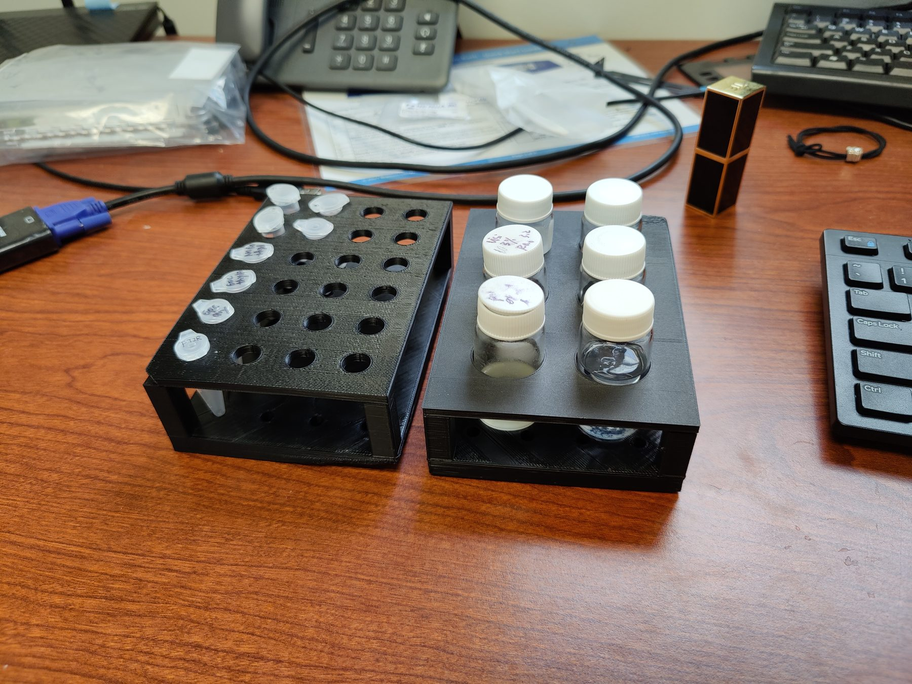
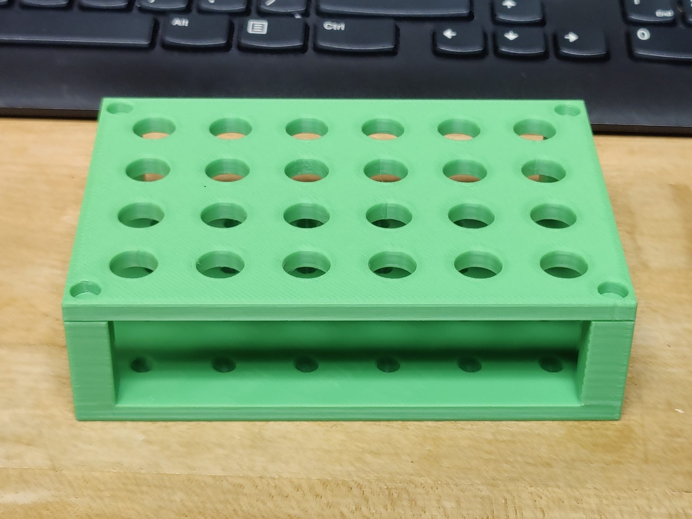
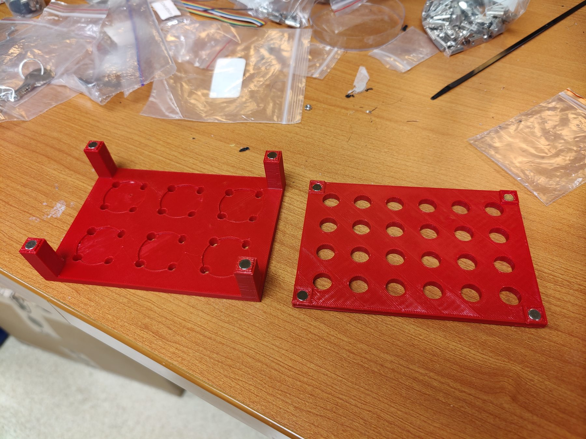

Sun Research Group · Apr 2022 – Jun 2022
3D Printed Sample Rack
A hot-swappable sample rack I designed and 3D printed to help my lab members organize and store their samples.



Overview
The 3D-printed sample rack is a simple tool designed to hold sample vials and miniature tubes. It is assembled by joining two separate components, a lid and a base. The two-part design lets the user swap the lid to hold different sample sizes, and it also improves printability by eliminating overhangs. The rack was designed for the PhD students in the Sun lab, who wanted a portable rack that could hold their printed samples. This project was fun because of its consumer-facing nature, and I made several design choices specifically to improve the user experience.
Two versions
I made two distinct versions of the rack. The first uses a lego-style connector to join the two components and relies on an interference fit to stay together. The second relies on embedded magnets to hold the rack together, which made it easier to swap the lid. The magnets were embedded in all four corners of both components using a press fit.
I printed more of the lego-style racks since they could be used immediately after printing, while the magnetic racks required press-fitting eight magnets. The lid also ended up rarely being swapped, so there was little reason to manufacture more magnetic racks.